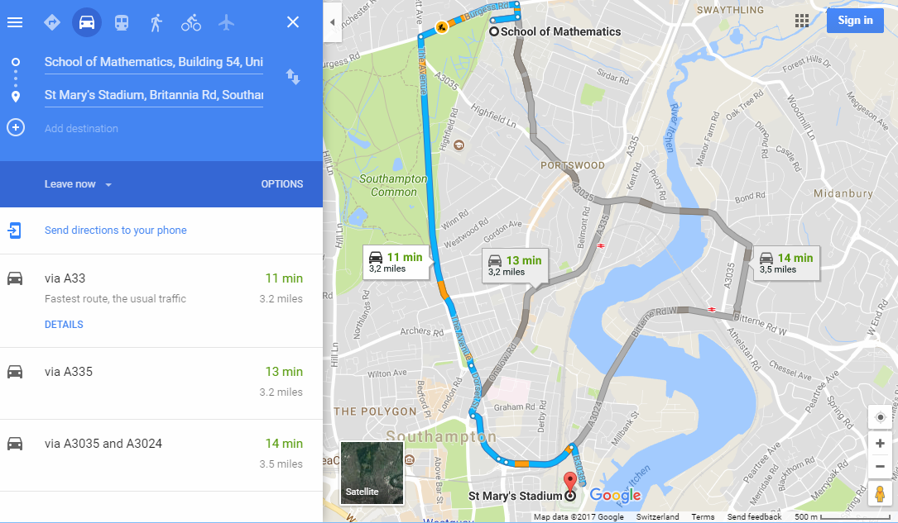
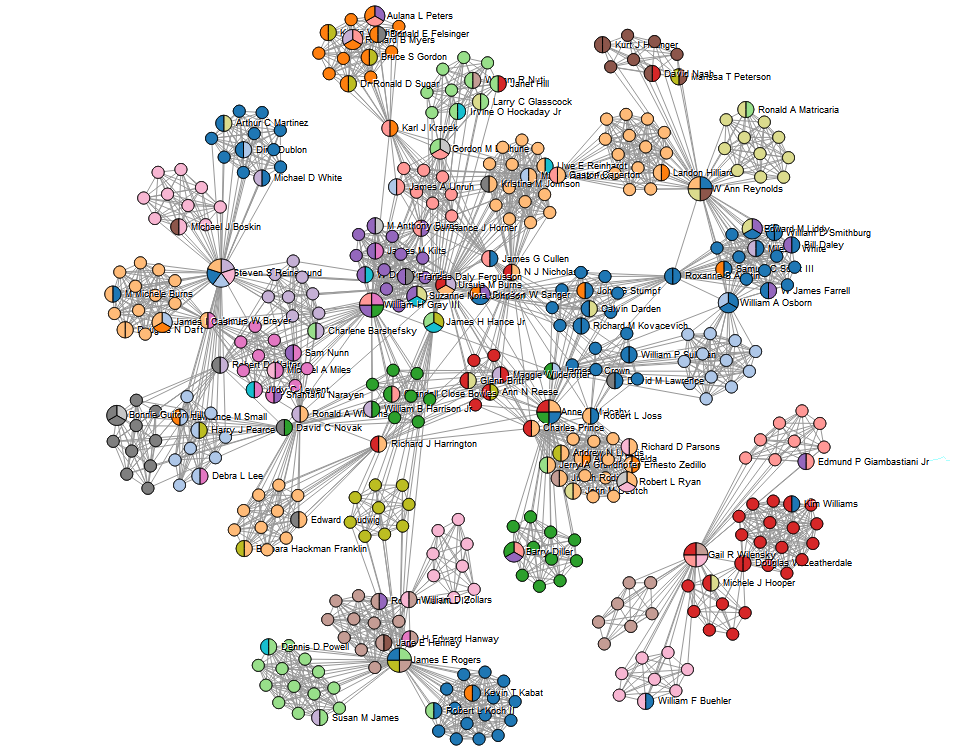
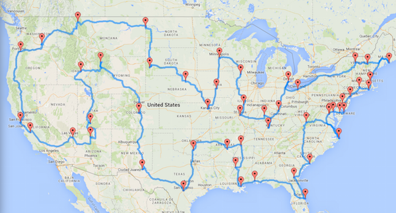
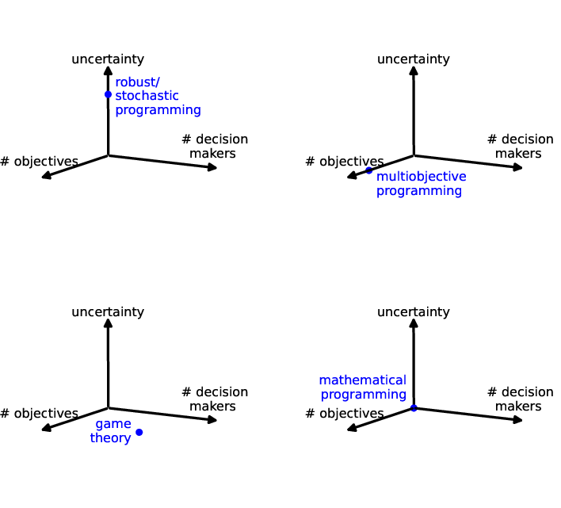

Lecture 1 - introduction
Ian Hawke
Lecture 1 - introduction
Ian Hawke
<section class="section1"><h1>Introduction to OR</h1> <aside class="notes"> Welcome to MATH1058, an Introduction to Operational Research and Mathematical Computing. My name is Ian Hawke; I am the module lead. Michael Kenna-Allison will also be instructing on the module. We will get into the course structure and who is doing what later. For now, I want to outline the problems we are going to tackle in this module. </aside> <hr/> </section><section class="section1"><h1>A meet up</h1> <p>A hard year.</p> <aside class="notes"> Imagine - it should not be difficult - that you've had a hard year, spending far too much time away from friends and family, and that you desperately want to meet up with a group of friends and just relax. So, you start planning. <br/> However, this is complicated. Your group of friends is scattered across the country. The differing work and study commitments narrow down the times you are all available. Some have other family commitments, adding more constraints. Travel may be difficult, or costly, or uncertain, constraining where the meet up can take place. Add in personality clashes, differences in what people want to do, and random last minute problems, we see that planning any meet up for a large group can be a lot of work. <br/> However, this is important. It can be done; it must be done. The question is how to do it best. This leads to two questions. What do we mean by "best"? Once we know what that means, can we find a "best", or "optimal", solution? </aside> <hr/> <section _=";" class="section2" data-background-image="images/01_intro/describe_predict.png" data-background-position="bottom" data-background-size="80%"><h2></h2> <aside class="notes"> Analytics covers a huge range of applied mathematics and statistics, including modelling, forecasting, machine learning, and a range of other fields and tools. In the context of our meet-up problem, we need to know what our group is doing (describe), what they, and their connections, work, travel options and so on, are going to be doing (predict), and what we should do for the best (prescribe). <br/> The operational research tools that we will introduce, analyse, and code are all prescriptive. Once we know what the problem is and what it means for a solution to be the best, or to be optimal, the tools and algorithms of operational research will find that solution. Of course, there are cases where such a solution does not exist, or there are many such solutions. Our analysis should tell us when this happens as well. </aside> <hr/> </section><section class="section2"><h2>Algorithms</h2> <ul> <li>A description</li> <li>of a <em>finite</em> set of operations</li> <li>that solve a <em>given problem</em></li> <li>for <strong>all</strong> of its <em>instances</em>.</li> </ul> <div class="fragment"> <section class="section4"><h4>Example</h4> <ul> <li><em>Problem</em>: solve <script type="math/tex">a x^2 + b x + c = 0</script> for <script type="math/tex">x \in \mathbb{C}</script>.</li> <li><em>Instance</em>: <script type="math/tex">a = 2, b = 8, c = 5</script>.</li> <li><em>Algorithm</em>:<ol> <li>Compute <script type="math/tex">b^2-4ac</script> and <script type="math/tex">2a</script>;</li> <li>Compute <script type="math/tex">\sqrt{b^2-4ac}</script> </li> <li>Compute <script type="math/tex">(-b\pm\sqrt{b^2-4ac})/(2a)</script>.</li> </ol> </li> </ul> <aside class="notes"> An algorithm is a description in some formal language. Mathematics is one such formal language. A computer code is another. One key aspect of this module is transforming problems between informal specifications (in natural language) and formal specifications (in mathematics or in code). Different formal languages emphasise different aspects of the problem, as so are useful in different ways. <br/> The example algorithm of computing the roots of a quadratic equation is standard. We see how, mathematically, it can be reduced to a limited number of explicit calculations. Depending on the detail level and implicit assumptions you are willing to allow you could write it on one line; here it is written in three, although the first and last lines both describe two calculations each. There remains the implicit assumption that $a$ is non-zero. Mathematically we would often think that this assumption is obvious. It may need to be explicitly dealt with in a computer code. </aside> <hr/> </section></div></section><section class="section2"><h2>Decision making</h2> <p>Find</p> <ul> <li>among a (very large) set (<em>feasible region</em>);</li> <li>the best case (according to <em>quantitative objectives</em>).</li> </ul> <div class="fragment"> <p>Typically consider</p> <ul> <li>cost minimization;</li> <li>profit maximization;</li> </ul> <p>subject to <em>constraints</em>.</p> <aside class="notes"> Making decisions is hard when there are many alternatives. The mathematical way of doing this is needed when we need to automate decision making, or when we need an argument to break a deadlock, or when it is not obvious what is best. Many of the questions in setting up the problem are not fully mathematical. Examples would be how we measure what the best case is, or which of many possible measurements we use. <br/> We also constrain our decision making process. In the meet-up problem, there is no point considering holding the meeting on the Moon unless your friendship group is really select. We have to constrain ourselves to what is possible. This is the key distinction from calculus, where finding extreme points is done over the whole space such as the real numbers. <br/> These constraints define the set of possible solutions that we consider. This is usually referred to as the feasible region. From the name you can guess that we're making links between this set and geometry, by thinking of it is part of a larger continuous space. This is extremely important in what we develop later. </aside> </div><hr/> </section><section class="section2"><h2>Production planning</h2> <figure class="figure1" data-title="An assembly line at a Ford factory, 1913."></figure><ul> <li><em>Decision</em>: how many units of X to make per day;</li> <li><em>Objective</em>: minimise production costs;</li> <li><em>Constraints</em>: daily demand.</li> </ul> <aside class="notes"> OR tools and decision making are hugely important in industrial contexts. One classic type of problem is production planning. If a factory produces more goods then you have more to sell in order to make a profit. However, if the demand is not there then you have wasted material (which costs money). Equally, introducing new equipment or techniques or training could increase productivity but also increase costs. Balancing these different aspects can be framed mathematically to guide decisions. </aside> <hr/> </section><section class="section2"><h2>Shortest path problem</h2> <figure class="figure2" data-title="Google maps shows a route in Southampton."></figure><ul> <li><em>Decision</em>: what route to take from A to B;</li> <li><em>Objective</em>: minimise travel distance or time;</li> <li><em>Constraints</em>: traffic, road quality.</li> </ul> <aside class="notes"> The shortest path problem is hugely important in many contexts. It is easy to visualise on a real road or rail network. It is also relevant for more other networks, including power networks and communication networks. </aside> <hr/> </section><section class="section2"><h2>Maximum clique problem</h2> <figure class="figure3" data-title="A social network seen as a graph."></figure><ul> <li><em>Decision</em>: what people form a group;</li> <li><em>Objective</em>: find groups of friends;</li> <li><em>Constraints</em>: limited information.</li> </ul> <aside class="notes"> Depending on the case and application, and your approach to privacy and information sharing, the maximum clique problem is either useful or disturbing. The broad idea is to take information from social networks, such as connections, conversations, likes and follows, and so on, and use them to group the users in some way. This is meant to reveal emergent or hidden commonalities that can be used or analysed. </aside> <hr/> </section><section class="section2"><h2>Traveling Salesman Problem</h2> <figure class="figure4" data-title="An optimal tour of 50 US landmarks."></figure><ul> <li><em>Decision</em>: what route to travel between many points;</li> <li><em>Objective</em>: minimise travel distance or time;</li> <li><em>Constraints</em>: go through each destination once.</li> </ul> <aside class="notes"> The traveling salesman problem, or TSP, is another hugely influential problem that is not yet solved. It's important for logistics where goods or people need to be transported between multiple locations, but the particular order in which each is visited is unimportant. What matters is that each is visited only once. This is easy to do with only a couple of destinations, but probably intractable for large numbers of destinations. Proving mathematically how the cost of solving the problem grows with the number of destinations is hard. </aside> <hr/> </section><section class="section2"><h2>Taxonomy</h2> <figure class="figure5" data-title="The different problems and solution methods."></figure><aside class="notes"> As discussed in the meet-up problem, there are many aspects to OR problems. How many quantifiable objectives do you want to optimise? How many independent people are making decisions? Are you considering sources of uncertainty? The more things you consider, the more complex the solution methods become, and the more fragile the solution methods often are. <br/> In this module we are going to focus on mathematical programming, or mathematical optimization problems. There will be a single objective to optimise. There will be a single decision maker saying what is best. There will be no uncertainty considered. We will see many examples of problems where the full reality does not fit within these solution methods. It is always worth trying the simplest solution methods first. But it is then necessary to consider how accurate these solution methods are, when you have to ignore fundamental aspects of the problem. </aside> <hr/> </section><section class="section2"><h2>This module</h2> <ul> <li>Two lectures per week (Monday, Thursday)</li> <li>One problem class per week (Friday)</li> <li>One computer lab per week</li> </ul> <p>All material through Blackboard.</p> <hr/> </section><section class="section2"><h2>Assessment</h2> <ul> <li>Theory worksheets<ul> <li>Formative</li> <li>Discussed from week 2</li> </ul> </li> <li>Python assignments<ul> <li>Total of 20%</li> <li>Biweekly from week 3</li> </ul> </li> <li>OR+Coding coursework<ul> <li>Total of 40%</li> <li>Released at Easter, submit week 12</li> </ul> </li> <li>Exam<ul> <li>Total of 40%</li> <li>Written, theory based.</li> </ul> </li> </ul> <hr/> </section></section><section class="section1"><h1>Summary</h1> </section>